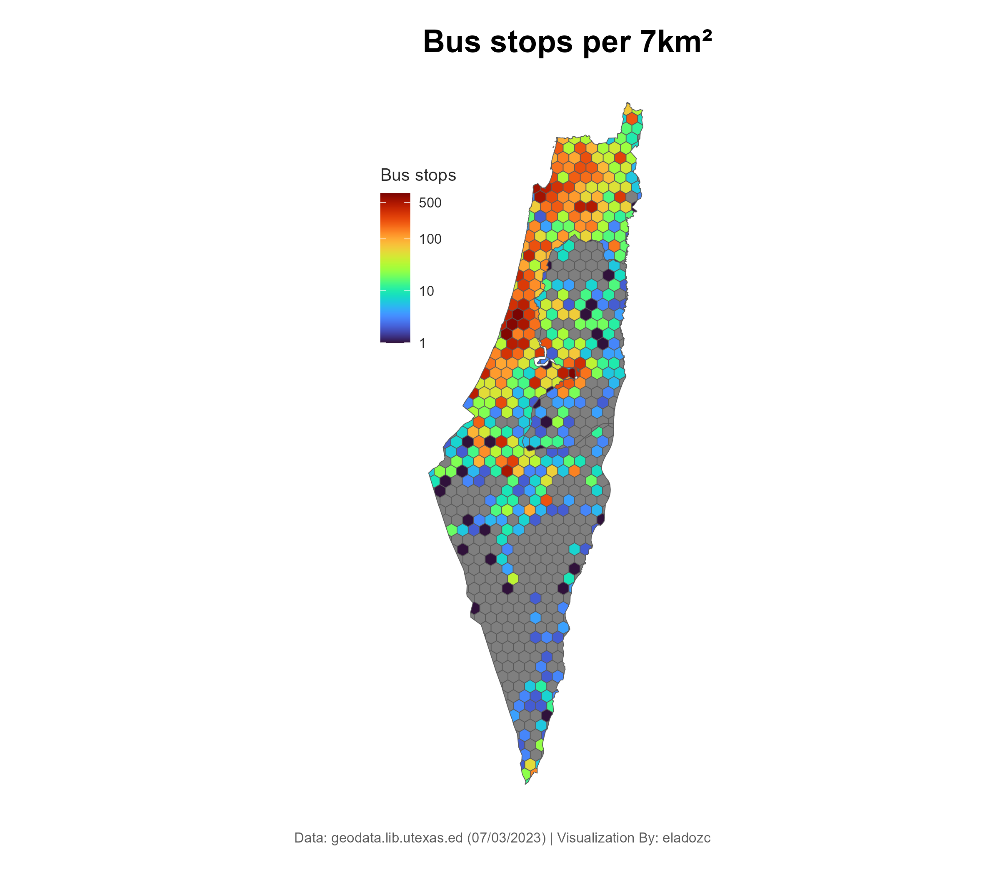
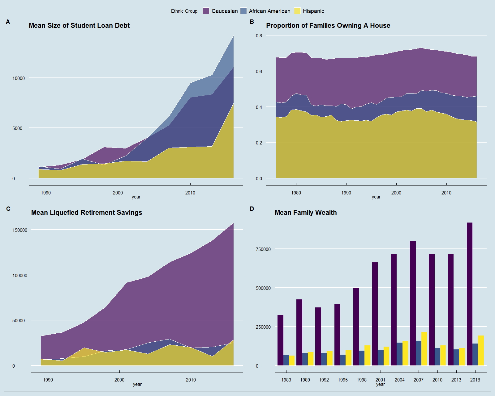
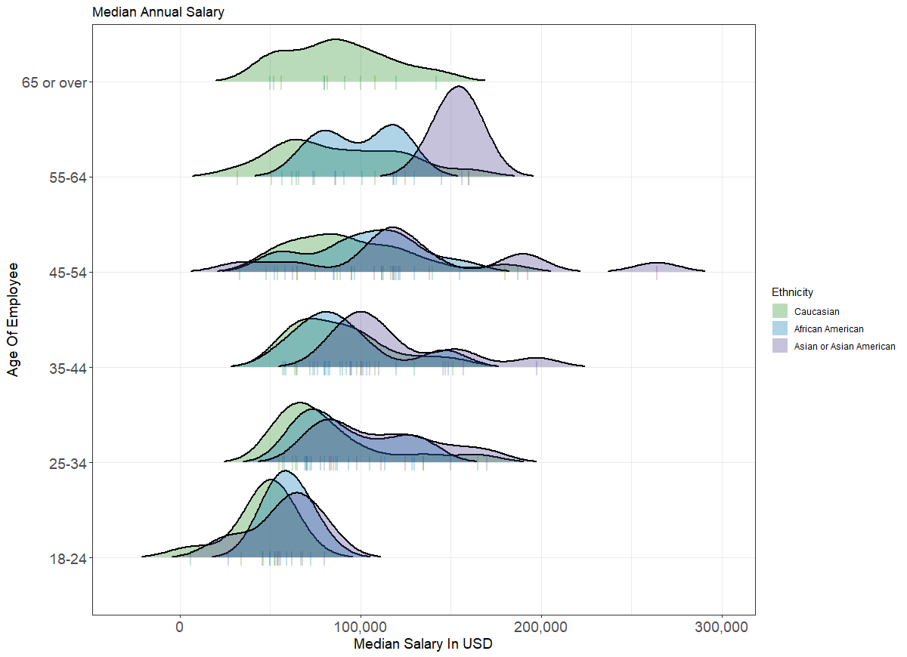

Data Visualization
On this page, I display various visualization projects. All Visualizations are accompanied by a direct link to the source code/file. Enjoy!
On this page, I display various visualization projects. All Visualizations are accompanied by a direct link to the source code/file. Enjoy!
This is my Tableau public portfolio which contains all my project visualizations using Tableau software.
In this project, I visualized the number of bus stations per square 7 kilometers. The conclusion drawn from the graph is straightforward: there is an overwhelming majority of bus stations as you get closer to the central district of Israel.
The plot below depicts various wealth and income data in the United States. More specifically, for each ethnic group they depict the change in time: (A) Student loan debt size, (B) The proportion of families owning a house, (C) The average size of liquefied savings, and (D) the average family wealth. An immediate insight drawn from the data is the consistent financial gaps between the three ethnic groups, favoring Caucasians, that only grew larger over time.
This plot depicts the various annual median salary distributions, as a function of ethnicity & age interval. The data was obtained via the 'Ask A Manager' survey in which twenty-six thousand employees shared their salary and other details. One can see how ethnic economic inequality tends to increase over the years.
{kind=link}
{kind=link}
{kind=link}